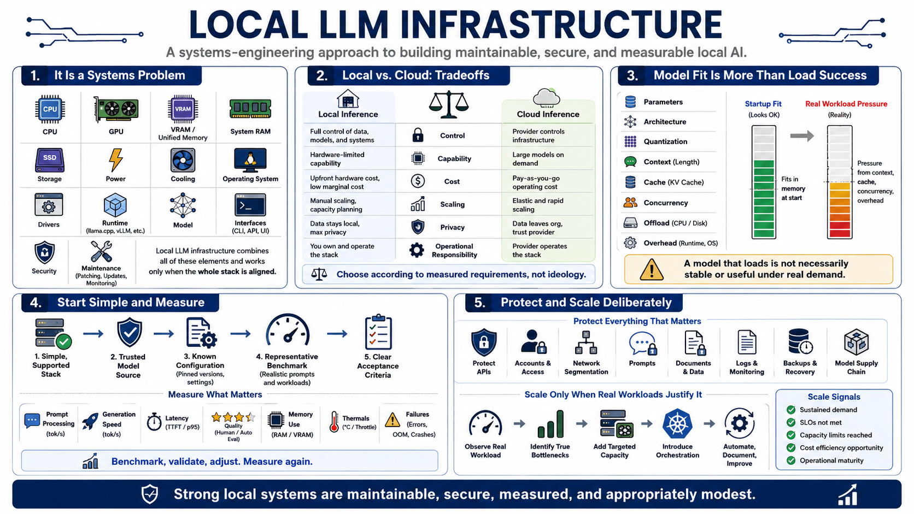

Course Summary and Key Takeaways
Connecting to LMS... Progress: in progress

Narration
Local LLM infrastructure is a systems-engineering problem. It combines CPU, GPU, VRAM or unified memory, system RAM, storage, power, cooling, operating system, drivers, runtime, model, interfaces, security, and maintenance.
Local and cloud inference offer different control, capability, cost, scaling, privacy, and operational tradeoffs. Choose according to measured requirements rather than ideology.
Model fit depends on parameters, architecture, quantization, context, cache, concurrency, offload, and overhead. A model that loads is not necessarily stable or useful under real demand.
Start with a simple supported stack, trusted model source, known configuration, representative benchmark, and clear acceptance criteria. Measure prompt processing, generation, latency, quality, memory, thermals, and failures.
Protect APIs, accounts, networks, prompts, documents, logs, backups, and model supply chains. Scale only when a real workload justifies more hardware or orchestration. Strong local systems are maintainable, secure, measured, and appropriately modest.